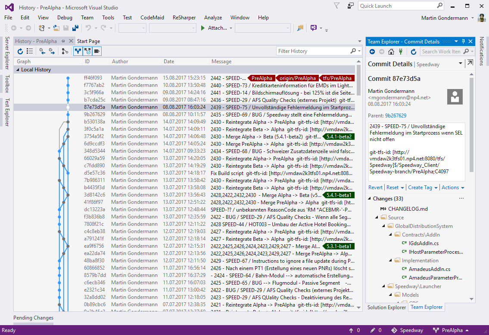
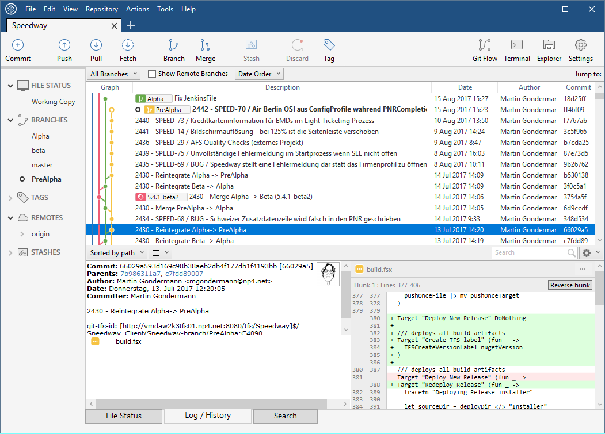
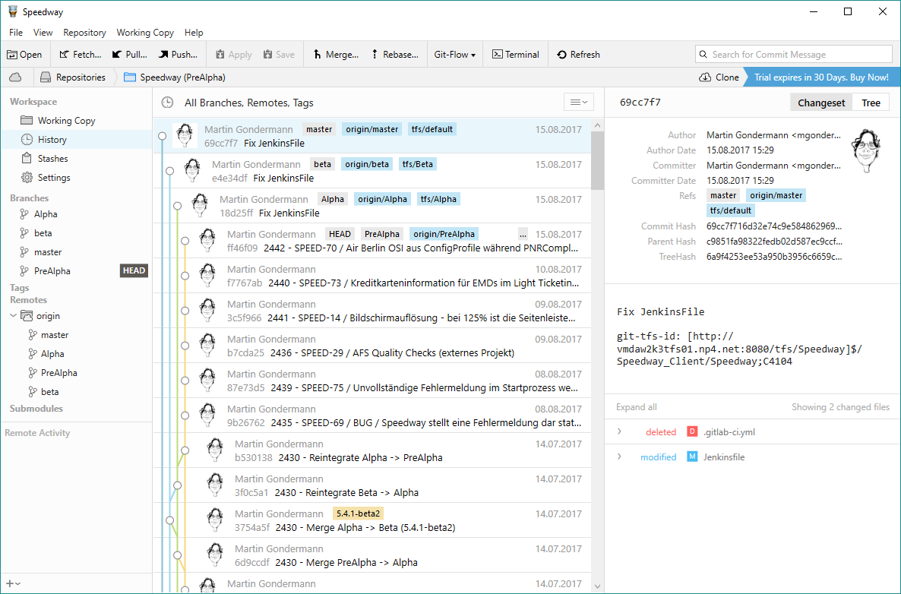
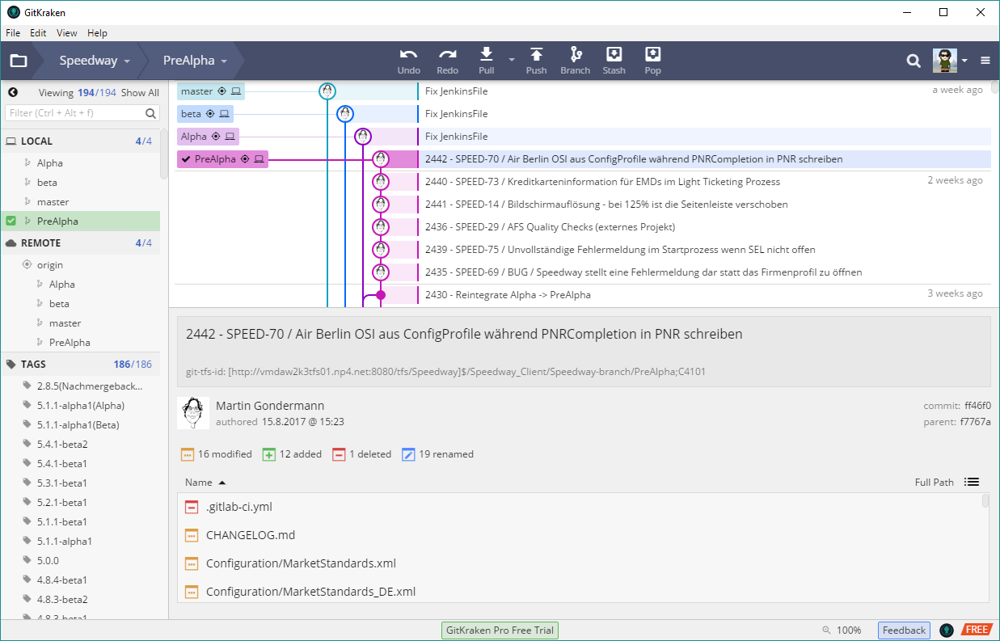

Git für TFS Benutzer
Einführung in Git und GitLab
Martin Gondermann - @magicmonty
TLDR
Vergleich TFS ↔ Git
TFS |
Git |
|---|---|
Zentralisiert |
Verteilt |
Workspace |
Repository (aka. "Repo") |
Changeset |
Commit hash |
Code Review |
Merge- oder Pull-Request |
TLDR
Vergleich TFS ↔ Git
TFS |
Git |
|---|---|
Get Latest |
|
Check in |
|
Check out |
Nicht notwendig |
Pending changes |
|
TLDR
Vergleich TFS ↔ Git
TFS |
Git |
|---|---|
Branch |
Branch - |
Label |
Tag - |
Shelveset |
Stash - |
Merge |
Merge - |
Zentralisiert vs. Verteilt
Zentralisiert

Zentralisiert vs. Verteilt
verteilt

Snapshots vs. Deltas
TFS - Deltas

Snapshots vs. Deltas
Git - Snapshots

Commit vs. Check in
-
TFS:
- Check in sendet geänderte Daten an den Server
- ein lokaler Commit ist nicht möglich
-
Git:
commitspeichert Änderungen im lokalen Repositorypushsendet die Änderungen im lokalen Repository an den Server
Branching
TFS
- Branch wird auf dem Server erstellt
- Branch wird dann in einem extra Verzeichnis auf den lokalen Rechner synchronisiert
- relative langsame ("teure") Operation, daher nur selten benutzt
Branching
Git
- Branch erstellen ist nur das Setzen eines Namens auf einen Commit
- Es wird immer im selben Verzeichnis operiert.
- Branch wechseln ist sehr schnell, da nur die geänderten Dateien im Verzeichnis angepasst werden
-
Wird häufig benutzt z.B. für
- Feature-Branches (kurzlebig)
- Bugfix-Branches (kurzlebig)
- Release-Branches (langlebig)
Git Clients
- Kommandozeile:
gitKommando -
Eingebaut in Visual Studio / VS Code
- nur die einfachsten Kommandos, für den normalen Betrieb aber durchaus ausreichend
-
externe Grafische Clients:
- SourceTree - https://www.sourcetreeapp.com/
- Tower - https://www.git-tower.com/windows/
- GitKraken - https://www.gitkraken.com/
Git Clients
Visual Studio integriert
Git Clients
SourceTree
Git Clients
Tower
Git Clients
Git Kraken
GitLab
aka "TFS für Git"
- Zentrales Repository-Management
- CI Server (optional)
- Wiki per Projekt (optional)
-
Issue-Management
- abgeschaltet und nach JIRA umgeleitet
GitLab Workflow
Production branch mit GitLab flow

GitLab Workflow
Environment branches mit GitLab flow

GitLab Workflow
Release branches mit GitLab flow

GitLab Workflow
Andere Branching-Strategien
-
Feature/CR/Bugfix-Branches
- relativ kurzlebig
- Werden in Release-, Environment- oder Production-Branches gemerged
- Ersatz für ShelveSets in FAEP